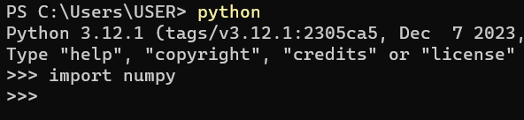

APRENDE SOBRE PYTHON
En este post reuniremos información importante sobre algunas de las utilidades más relevantes para poder programar con Python respondiendo a las siguientes preguntas:
¿Qué es una condicional en Python?
Una condicional en Python, es una estructura de control que permite evaluar si una o más condiciones se cumplen para ejecutar la acción que le solicitamos. Este tipo de declaraciones son fundamentales para la programación ya que permiten que un programa tome decisiones y ejecute diferentes bloques de código según ciertas condiciones. Sirven para:
Los principales tipos de condicionales son: if, if - else, if - elif - else. A continuación vamos a ver cómo y cuando se usan.
La sentencia if de Python es una de las sentencias condicionales más utilizadas en la programación; si la condición se cumple se ejecuta el código. Tenemos que proporcionar la condición y la acción a ejecutarse si esa condición es verdadera. En el ejemplo siguiente, if toma la edad y si es mayor que 18 ésta imprimirá la frase "La persona es mayor de edad." Si el número es menor que 18, no imprime nada y se sale de la condición.

A diferencia de la sentencia if, la sentencia if-else se utiliza para ejecutar tanto la parte verdadera como la falsa de una condición. Si la condición es verdadera, se ejecuta el bloque de código if. Si la condición es falsa, se ejecuta el bloque de código else. En este ejemplo, if toma la edad y si es mayor de 18 imprimirá en pantalla "La persona es mayor de edad.", y si es menor que 18, imprimirá "La persona es menor de edad.". Con este ejemplo se ve de forma muy clara la diferencia entre if e if-else.
La estructura if-elif-else en Python se utiliza para evaluar múltiples condiciones de manera secuencial, así como en el anterior caso solo teníamos 2 condiciones, con elif podemos crear tantas condiciones como queramos siempre que if sea falso. En el siguiente ejemplo, vemos que a parte de las 2 codiciones que teniamos anteriormente, hemos incluído en elif los números que sean menor de 0 y en ese caso nos imprimirá "La edad es incorrecta." ya que sabemos que la edad debe ser siempre mayor que 0.
Este tipo de condicionales, son los que incluyen un condicional dentro de otro.
Nota importante: todas las condicionales se secriben en minúscula.
¿Cuáles son los diferentes tipos de bucles en Python? ¿Por qué son útiles?
En Python, los bucles se utilizan para repetir varias veces la ejecución de una parte de un código, tantas veces como queramos mientras cumpla las condiciones que deseemos. Sirven para:
Los 2 bucles que existen en Python son: bucle While y Bucle For. A continuación vamos a ver cómo y cuando se usan.
Mediante el bucle While, se ejecuta una porción de código una y otra vez hasta que la condición sea falsa. En el siguiente ejemplo, se crea un contador y se inicializa a 0, y con el bucle while, vamos a ir iterando el contador hasta que el contador sea menor que 5, lo que nos devolverá todos los números impresos de uno a uno, desde 0 hasta 4. Esto significaría, imprímeme el contador y sumale 1, hasta que el contador sea menor que 5.
En Python, un bucle for se utiliza para iterar sobre una secuencia (como listas, tuplas, cadenas, diccionarios o rangos) y ejecutar un bloque de código para cada elemento mientras la secuencia exista. En nuestro ejemplo, la secuencia es frutas, y con el bucle for vamos a imprimir cada elemento que hay dentro de esta secuencia, que en este caso es una lista. La palabra que va después de for, puede ser cualquier palabra, pero siempre vamos a intentar que sea una palabra que describa el elemento que se está imprimiendo. En este caso, sabemos que estamos tratando con una lista que contiene frutas, por lo que a cada elemento llamaremos fruta.
Nota importante: al trabajar con bucles While, es importante tener cuidado para evitar crear bucles infinitos y asegurarse que el programa se comporte como se espera.
¿Qué es una comprensión de listas en python?
La comprensión de listas, list comprehension en ingles, se usa para crear listas de forma más concisa y abreviada, en una sola línea de código, usando el bucle for para incluir condiciones y filtrar los elementos según nuestros criterios. Sirven para:
La sintaxis de una comprension de listas sería la siguiente:
nueva_lista = [expresion for elemento in secuencia]
o la siguiente si queremos incluir una condiciónnueva_lista = [expresion for elemento in secuencia if condicion]

¿Qué es un argumento en Python?
En Python, los argumentos son los valores que se proporcionan a una función para permitir su ejecución y operación sobre los datos suministrados, es decir, son los valores oligatorios que el programador debe proporcionar mientras llama a una función para que se ejecute dicha función. Estos valores se ingresan después de la función, dentro de paréntesis () y separados por comas en caso de que exista más de una.
¿Cómo sabré si necesito pasar argumentos a mi función?Para determinar si una función requiere argumentos, debes inspeccionar la forma en la que se declara tu función, si en la primera línea después del nombre de tu función, hay un nombre de variable dentro de los paréntesis, significa que en la llamada de la función también debes proporcionar un argumento.
Cuando enviamos argumentos a una función, estos se reciben por orden en los parámetros definidos. Se dice por tanto que son argumentos por posición
Nota importante: si en la creación de la función se ingresa un argumento, y en la llamada no, la función no se ejecutará.
¿Qué es una función de Python Lambda?
Lambda es la forma más sencilla de crear funciones cortas que podemos usarlos dentro de otras funciones. Se crean usando una sola línea de código y consta mínimo de un parámetro.
La sintaxis de un lambda sería la siguiente:
mi_funcion = lambda parámetros: cuerpo de la función
En este código, hemos utilizado una expresión lambda para crear una variable llamada nombre_completo, que toma dos argumentos: nombre y apellido. En este caso, la función lambda devuelve una cadena formada por la concatenación del nombre y el apellido.
Después de definir la función lambda, utilizamos la función print para imprimir el resultado de llamar a nombre_completo con los valores 'Alla' y 'Haruty' como argumentos. En otras palabras, estamos utilizando la función lambda para generar y mostrar el nombre completo, en este caso nos devolvería "Alla Haruty"
¿Y cómo puedo usar una función lambda dentro de otra función?La utilización de una función lambda dentro de otra función en Python es sencilla y se logra llamando a la función lambda en la sección del código donde sea necesario, previamente habiéndola definido..
¿Qué es un paquete pip?
Un paquete pip es un conjunto de archivos que se denominan módulos y están compuestos por funciones creadas por otros programadores. Este tipo de archivos ayudan, facilitan y agilizan nuestro trabajo ya que nos permiten utilizar funciones que posiblemente hayan tomado mucho tiempo en ser creados por otros programadores que actualmente nos permiten reutilizarlos, al ser de domino público en Python Package Index (Página oficial).
¿Y cómo puedo utilizar estos módilos de PyPi?Para poder utilizar los paquetes pip, primero debemos instalaros y tenerlos actualizados en la última versión siempre.
PASO 1: INSTALAR EL PAQUETE DESEADOEn este ejemplo vamos a instalar un paquete llamado NumPy, este es un paquete que nos permite procesar números, strings, y objetos, mediante diferentes funciones por los que está compuesto.
Para ello iremos a nuestra terminal y escribiremos el comando: pip install numpy y presionaremos enter.
Una vez instalado nos aparecerá en pantalla el mensaje: Successfully installed numpy-version
En caso de tenerlo ya instalado nos aparecería el mensaje: Requirement already satisfied: numpy directorio/donde/está/instalado
PASO 2: IMPORTARLO PARA PODER USARLOPara poder usar las funciones de estos módulos, debemos importarlos cada vez que los necesitemos, ya sean dentro de un archivo.py o desde el terminal, en modo repl. El comando es: import numpy
PASO 3: LLAMAR A LA FUNCIÓN QUE QUERAMOS
En nuestro caso usaremos la función numpy.arange() , que sirve para crear un array con números del rango que queramos.
Para ello creamos una variable llamada num_range y con la función numpy.arange(11) y así creamos una lista de números del 1 al 10, ya que el último número no se incluye.